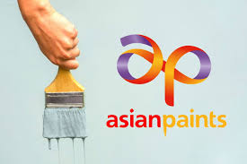
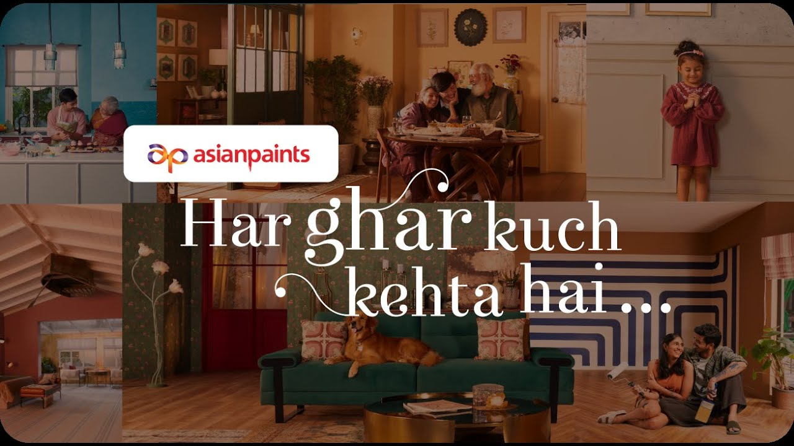

How a paint company transformed walls into stories and homes into emotions — creating a category-dominating brand through emotional storytelling and aspirational content.

Asian Paints is not just a paint company — it is one of India's strongest examples of how strategic branding can transform a functional product into an emotional household name. The brand has moved far beyond selling paint colors and wall finishes to position itself as a trusted partner in building homes, memories, and personal identity.
The brilliance of Asian Paints lies in understanding consumer psychology deeply: people do not simply buy paint. They buy the feeling of a fresh beginning, the pride of a beautiful home, and the emotional value attached to every room. Asian Paints recognized this insight early and built campaigns that speak directly to emotions rather than product features.
Two campaigns — "Har Ghar Kuch Kehta Hai" and "Where the Heart Is" — perfectly demonstrate how a brand can use emotion, storytelling, and long-term strategic thinking to dominate an entire category.
The "Har Ghar Kuch Kehta Hai" campaign is one of the most iconic brand campaigns in Indian advertising. The central strategy was to create an emotional connection between homes and the people living in them. Instead of focusing on paint durability or pricing, the campaign focused on the deeper idea that every home has a story.
While competitors were talking about features and product benefits, Asian Paints was talking about life, family, memories, and identity. This is what made the campaign exceptionally successful — it moved the brand away from price-based competition entirely.
"The line 'Har Ghar Kuch Kehta Hai' became more than a tagline; it became a cultural statement. Consumers may forget features, but they rarely forget how a brand made them feel."
The creative execution was highly cinematic — emotional storytelling through real-life situations, family moments, and everyday experiences. This campaign succeeded because it understood that emotional storytelling increases long-term brand memory far more effectively than product-feature advertising.

The "Where the Heart Is" campaign took the strategy to the next level by building a content-driven brand ecosystem. Instead of direct selling, Asian Paints positioned itself as a design and lifestyle inspiration brand through a digital storytelling series featuring celebrity homes and personal stories behind beautiful spaces.
The core strategy was content marketing combined with aspirational branding. By showing the homes of well-known personalities and the stories behind those spaces, the campaign created trust, aspiration, and desire — addressing a different stage of the customer journey.
"While 'Har Ghar Kuch Kehta Hai' built emotional awareness, 'Where the Heart Is' helped customers imagine what their own homes could become. This is full-funnel brand marketing at its finest."
The consumer first connects emotionally with the brand through storytelling, then engages with inspirational content, then moves toward product consideration, interior consultation, and purchase decisions. A complete brand funnel built through content — an approach that preceded the modern influencer marketing era.
Every campaign centered on how a home makes you feel — not what the paint technically does. This emotional ownership created a connection competitors cannot replicate with product specs.
Instead of conventional ads, Asian Paints used cinematic storytelling with real-life family moments. This gave the brand a film-quality recall that embedded it in cultural memory.
Where the Heart Is created a full content ecosystem around home inspiration. This moved Asian Paints from advertiser to lifestyle authority — a much more powerful position.
By showcasing celebrity homes, the brand created aspirational desire without being unattainable. Every viewer thought: "I could have a home like this" — with Asian Paints as the bridge.
Awareness → emotional connection → home inspiration → product consideration. The two campaigns worked together to cover every stage of the customer journey seamlessly.
TV, digital, social, website — all channels maintained the same emotional tone. This omnichannel consistency reinforced brand recall at every consumer touchpoint.
Asian Paints' campaign success comes from three core pillars: emotional branding, content-led storytelling, and full-funnel customer journey design. The brand successfully transformed a commodity product into a lifestyle and emotional category leader.
By focusing on how consumers feel about their homes — rather than what paint technically does — Asian Paints created long-term trust, stronger recall, and category dominance that competitors cannot price-compete against.
The biggest strategic lesson: the most successful campaigns are not always product-driven. The most successful campaigns deeply understand the human emotion behind the buying decision, and build the entire brand around that emotional insight.
At Brand Business Talk, we help brands with research, strategy, market insights, and growth recommendations. Let's build your brand growth strategy together.